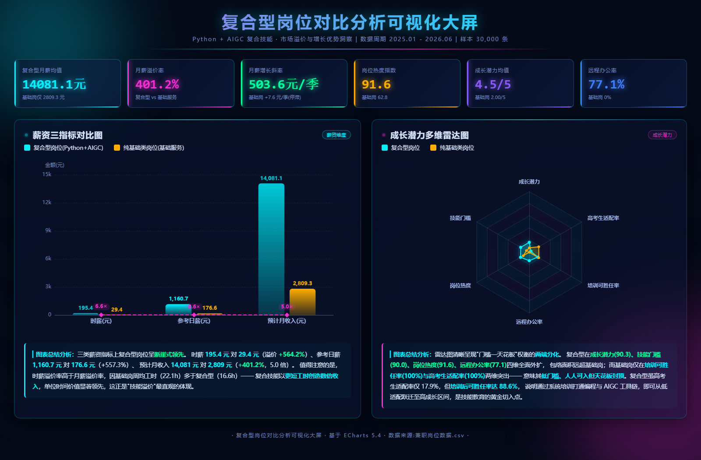
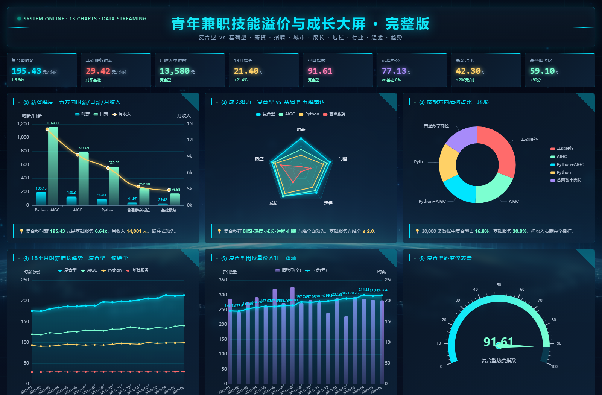

把一个模糊的感觉——「复合技能更值钱」——变成一组可以被追问的数字。 用 KPI 概览条 + 薪资柱状图 + 成长潜力雷达图 三个视角交叉验证同一件事， 而不是堆三张同义的图。
兼职岗位数据.csv 是课程/练习提供的模拟演示数据集，
不是我从招聘平台采集的真实报价。数据集自带字段已明确标注「数据性质＝模拟演示数据」
「按技能稀缺度、城市和时间趋势生成，非真实招聘报价」。
因此这个项目展示的是分析口径与可视化链路，页面上所有结论仅在该模拟数据集上成立，不代表真实市场水平。
—— 我选择主动讲清这一点，因为分析的严谨性比结论好看更重要。
手上拿到一份 3 万行的兼职岗位数据，里面有个字段叫「技能方向」。于是想回答一个很具体的问题： 同时会 Python 和 AIGC 的岗位，比纯基础服务岗到底值钱多少、值钱在哪。 「更值钱」只靠感觉说不清楚，也没法拿给别人看 —— 得先把感觉变成数字，再让数字能被追问。

顶部六个 KPI 给结论（月薪 14,081 元 vs 2,809 元、溢价率 401.2%、增长斜率 503.6 元/季、热度 91.6、成长潜力 4.51/5、远程办公率 77.1%）； 左侧柱状图给薪资差距的绝对量；右侧雷达图给结构——复合型在成长潜力、技能门槛、岗位热度、远程办公率四个维度全面外扩， 基础岗只在「培训可胜任率」「高考生适配率」上满格。一张图只能说一个数，三个视角才能说清结构。

基础版回答「差多少」，扩展版回答「为什么差」。13 张图覆盖薪资五方向对比、成长潜力五维雷达、 技能方向结构环形、18 个月薪资趋势、岗位量与时薪双轴、热度仪表盘 —— 其中薪资趋势那条线最能说明问题：18 个月里复合型月薪从 12,786 涨到 15,406（+20.5%）， 基础岗从 2,768 到 2,801，几乎是一条平线。
KPI 条给结论、柱状图给绝对量、雷达图给结构 —— 三个视角互相印证，而不是三张同义图。
时薪/日薪/月收入均值、溢价率、成长潜力均值、远程办公率都由 pandas 算完再注入，前端只负责画。
HTML 模板里写 __COMP_MONTH__ 这类占位符最后统一替换 —— 直接拼 f-string 会被 CSS/JS 的花括号冲垮。
注入 JS 时用 json.dumps(..., ensure_ascii=False)，否则中文全变成 \uXXXX。
KPI 数字用缓动函数做滚动动画、雷达图做呼吸效果、柱状图轮播高亮 —— 这些细节决定「专业还是不专业」。
数据集自身的口径字段被原样写进页面顶部，而不是把模拟数据当市场事实陈述。
技能方向 字段切出复合型与基础服务两组。ensure_ascii=False 保持可读。三个数字就是整个页面的结论支点 —— 其余图表都是围绕它们做交叉验证。
雷达图的"结构性分化"比任何单个数字都更能解释「值钱在哪」。
数据集的模拟属性被我写到了页面最显眼处，而不是藏在角落。结论带着边界一起说，才经得起追问。
每张图都要能回答一个具体问题，否则就是在凑版面。